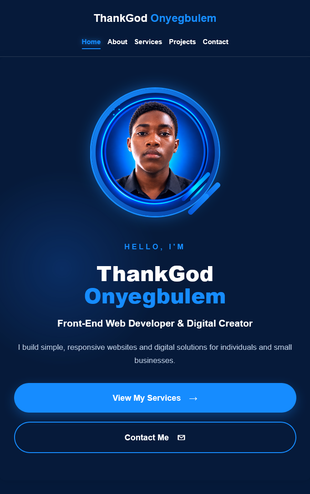
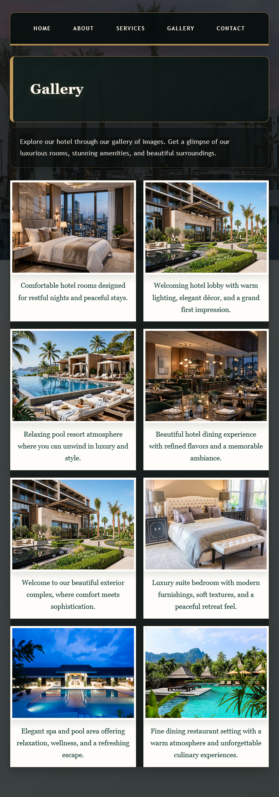
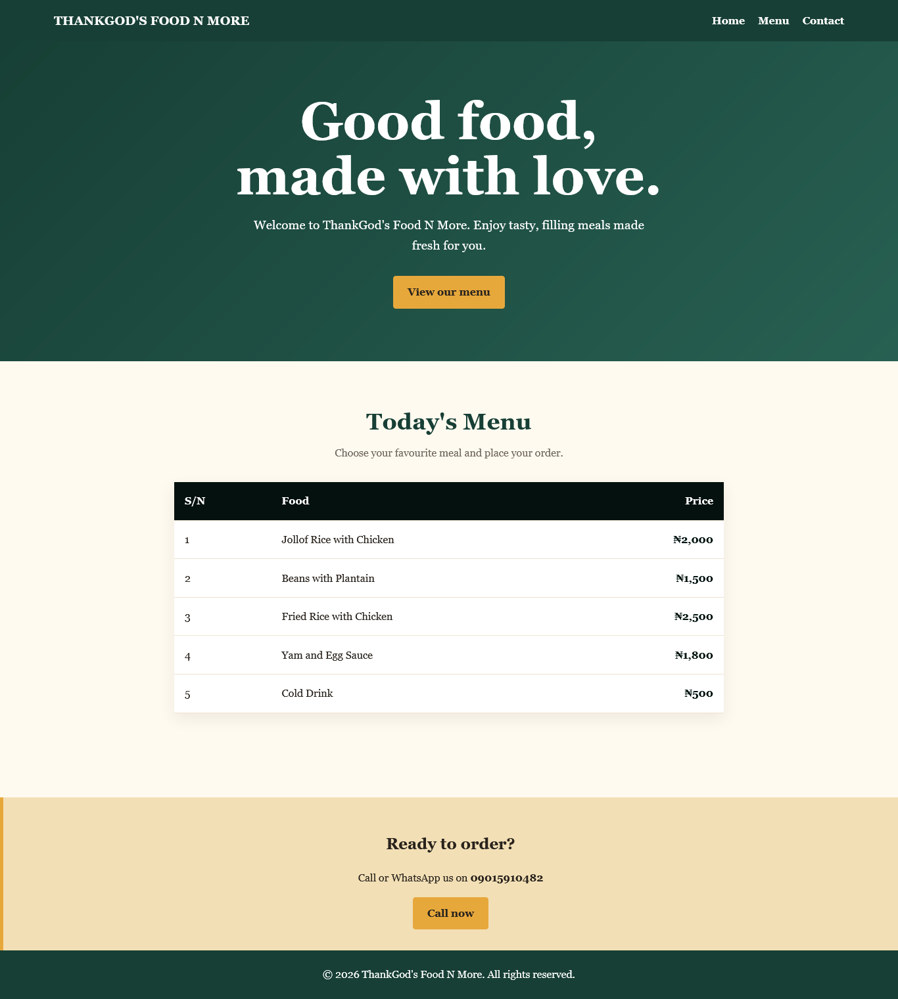

My Projects
Here are some of the projects I have created while developing my web development and digital skills.
🌐 Personal Portfolio Website

A responsive personal portfolio website created using HTML and CSS.
Technologies: HTML, CSS
🏨 Hotel Website

A sample hotel website showing information about rooms, facilities, services and contact details i created it using html and css.
Technologies: HTML, CSS
🍔 Restaurant Website
A sample restaurant website containing a menu, business information and contact section.
Technologies: HTML, CSS
🎨 Digital Design Samples
A collection of simple promotional flyers and social media graphics created while practicing digital design.
Restaurant Website

A sample restaurant website containing a menu, business information and contact section.
Technologies: HTML, CSS
Social Media Support & Management
A collection of social media support and management tasks I have completed for individuals and small businesses.
Technologies: Canva, Social Media Platforms